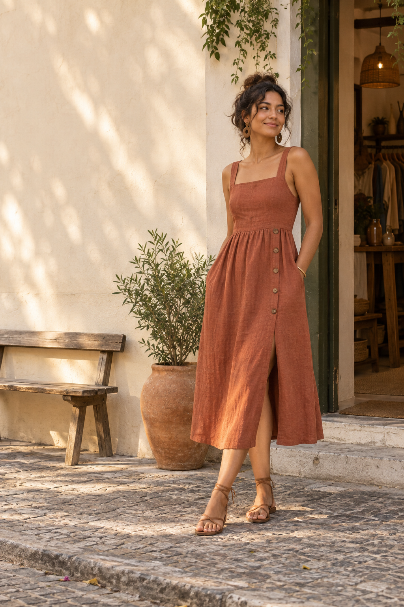
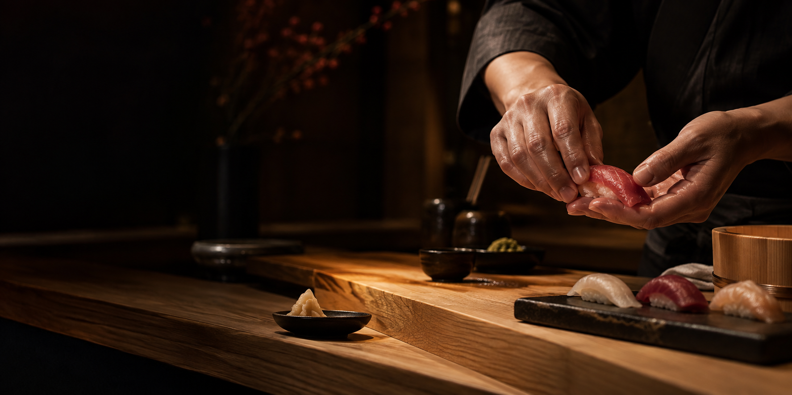

Site institucional
Uma presença completa para apresentar seu negócio, seus serviços e seus canais de contato com clareza e personalidade.
- Design responsivo
- Contato direto
- Estrutura sob medida
Criação de sites e landing pages com visual marcante, navegação simples e um escopo que faz sentido para o seu negócio.
Rio de Janeiro · Atendendo todo o Brasil
Seu negócio não precisa de mais um site igual a todos os outros.
Precisa de uma presença que seja clara, confiável e lembrada.
Começo por dois formatos objetivos: cada projeto é desenhado para comunicar melhor e facilitar o próximo passo do seu cliente.
Uma presença completa para apresentar seu negócio, seus serviços e seus canais de contato com clareza e personalidade.
Uma página focada em uma oferta, campanha ou serviço, conduzindo o visitante até a ação que importa.
Dois conceitos, duas direções visuais. Explore o raciocínio por trás de cada experiência.

Uma boutique autoral apresentada com proximidade, textura e movimento.
Explorar o case
Uma experiência editorial de cozinha japonesa contemporânea, construída em torno de gesto e precisão.
Explorar o caseServiços Próximo case em desenvolvimento
Você acompanha as decisões importantes sem precisar entender de código.
Conversamos sobre o negócio, o público e o objetivo do site.
Defino a linguagem, a estrutura e como sua marca será apresentada.
Desenvolvo, adapto para celular e reviso os detalhes da experiência.
Com tudo aprovado, seu site é preparado e colocado no ar.
Conte o que você precisa. Eu retorno com as perguntas certas para começarmos.